Case study · Cabify Spain · Jul to Sep 2026
ADP · Add Remove Asset Products
Every vehicle carries a list of commercial products, such as airport trips, kids seats or corporate tiers, and a daily audit sets that list from a rule matrix per city. Any change requested outside the matrix was applied by hand and silently undone the next morning. ADP turns each request into a rule the audit respects, and hands the result to the RPA Uploader so nobody uploads files by hand.
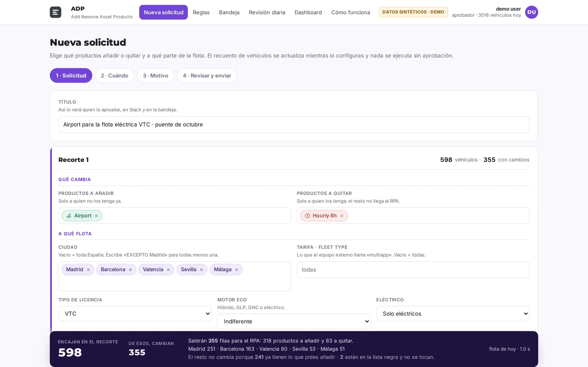
The problem
About 30 ad-hoc requests a month arrived by Slack, email or direct message. Each one meant cross-referencing the fleet by hand, building a CSV and uploading it to an internal RPA tool, around 45 minutes per request. The next day's audit only knew the matrix, so it undid the change. Nobody could say who had asked for what, or why a car had a product.
One chain, from the request to the RPA
The portal
- A web app open to any employee. You slice the fleet by city, tariff, segment, company, model, engine, year or accessibility, or paste a list of vehicle IDs, with an "except" option on every filter.
- A live counter shows the vehicles in scope and how many would really change, with the reasons for the rest: they already have the product, they do not have the one you want to remove, or the product is protected.
- Changes can apply on approval, on a date or at the next daily run. Temporary changes revert themselves by generating the inverse file when they expire. A reason is mandatory.
- Any one of three approvers can approve, from the portal or from Slack, and the approver's identity is checked against company sign-in.
- Every approved change becomes a rule with an author, a reason, a validity and a priority, so the daily review enforces it instead of undoing it.
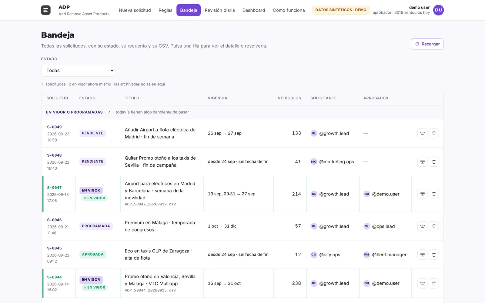
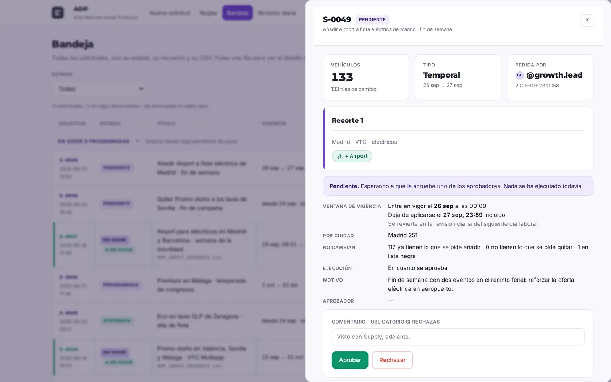
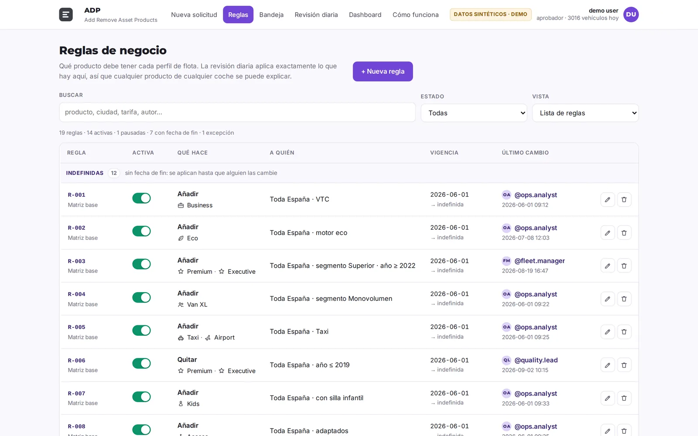
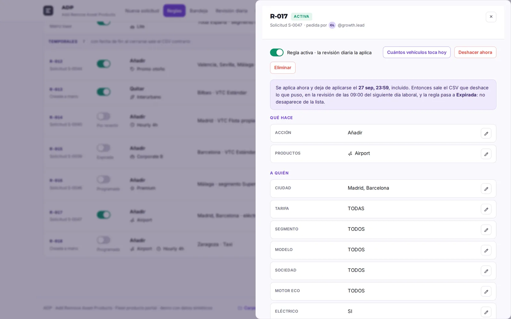
The daily review
Every morning the review applies the city matrix and then every rule in force, in priority order, to the whole fleet. It writes the CSV for the uploader, a summary by category and a health check of the run. If the daily fleet export does not arrive, it uses the last one and says so on the board.
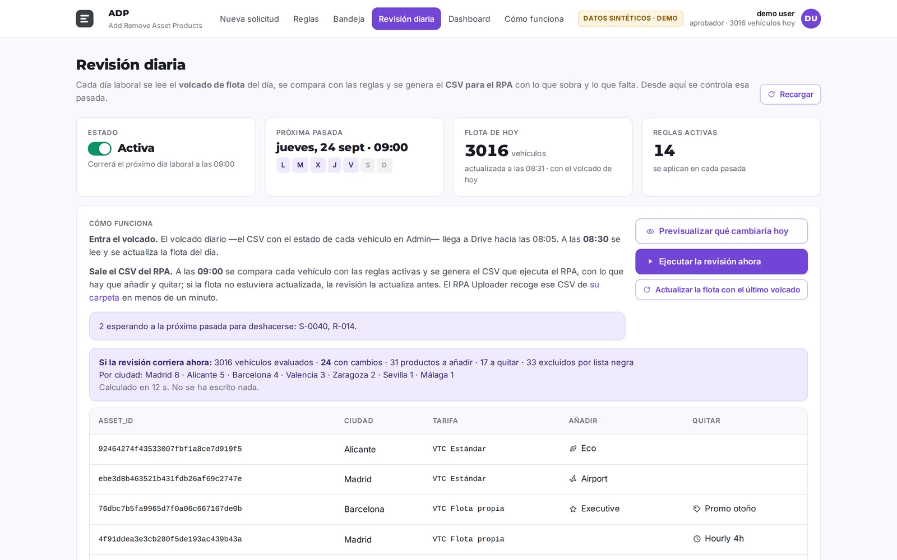
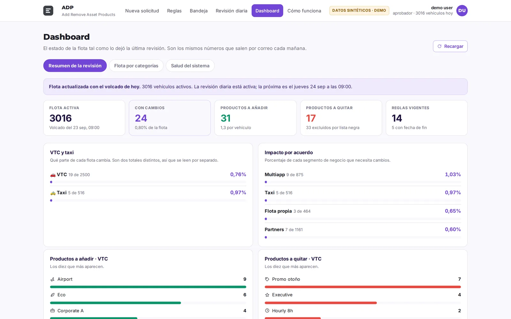
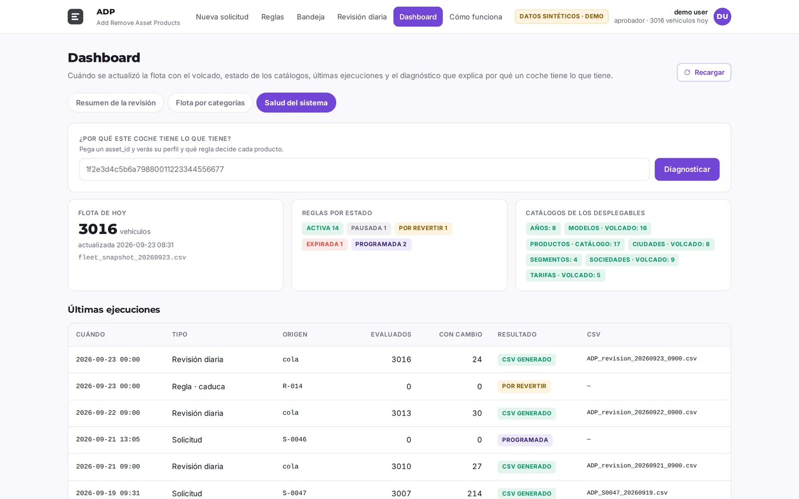
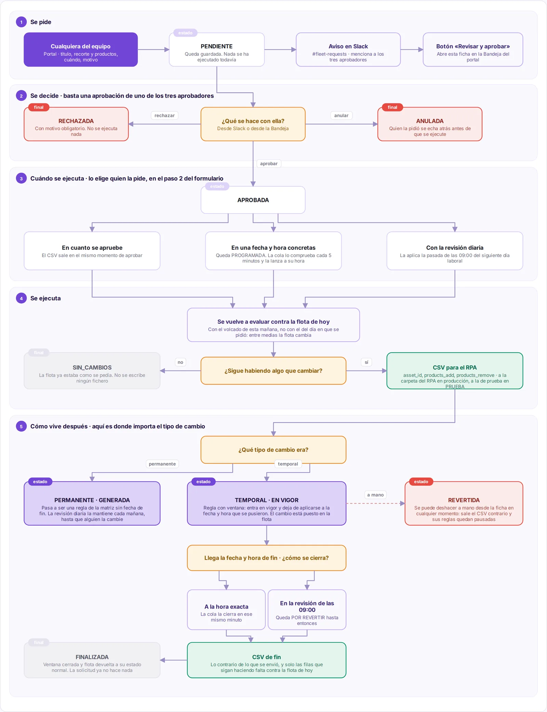
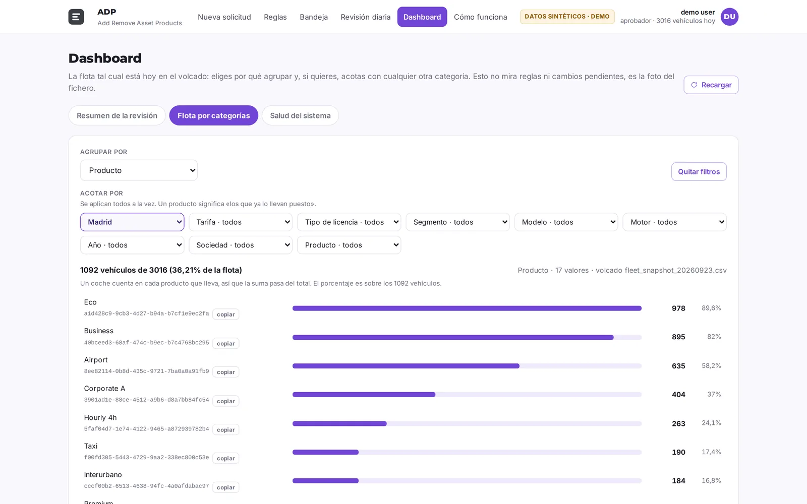
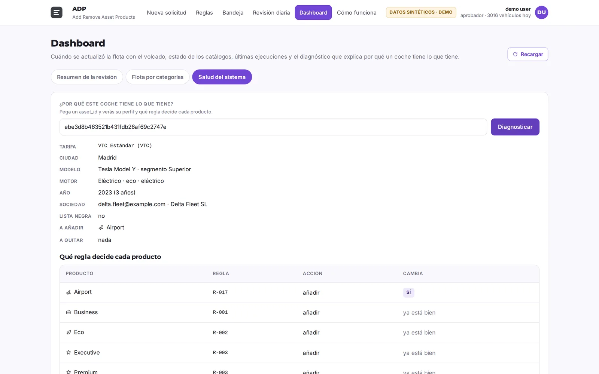
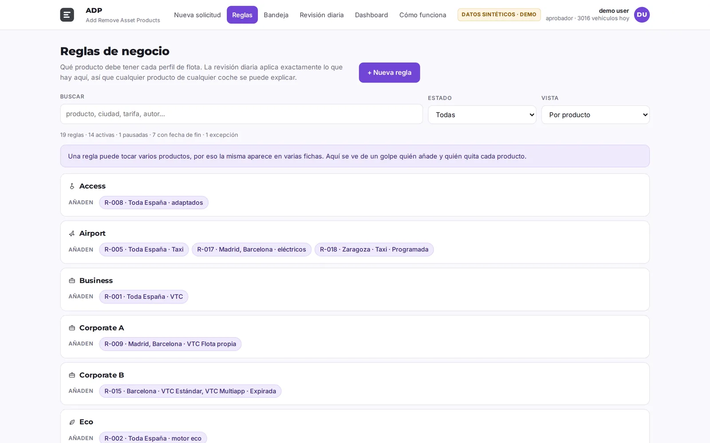
Guards
- If the daily fleet export does not arrive, the last one is used and the board says so.
- An unreadable expiry date fails closed. Before, a date like 2026-13-45 simply never expired.
- A protected list keeps 46 products out of reach of any rule. A file with more than five parts is held for a manual upload.
- The test environment writes to its own folders, never to production.
- 104 automated checks cover the expiry logic, because that is where a silent mistake would last longest.
Results
- About 28 hours a month of manual work removed: 30 requests at 45 minutes, 21 daily reviews at 5 minutes and 63 uploads at 5 minutes, against roughly an hour of approvals now. The conservative estimate is 16 hours.
- 60 rules and 33 products managed from one place, each change with an author, a reason and a history.
- An approved change now survives the next morning's audit, because the audit applies it. The upload side is covered in the RPA Uploader case.
Still open
Watching the first temporary rule expire in production, and replacing the once-a-day fleet export with a direct warehouse query so a rule change can be verified the same day.
Screenshots are the real portal rendered with a synthetic fleet of 3,016 vehicles and invented users.